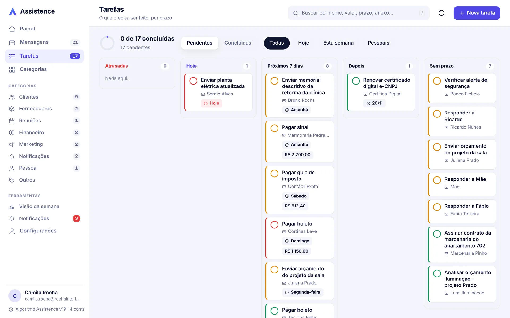

Suas mensagens organizadas.priorizadas.resolvidas. Sua rotina sob controle.
O Assistence reúne e-mails e conversas, identifica o que realmente importa e transforma mensagens em tarefas, prazos e valores claros. No computador e no celular.
Todas as suas conversas de trabalho em um só lugar
Muitas informações, pouco tempo.
Mensagens importantes se misturam com comunicações irrelevantes. Prazos passam despercebidos, pedidos ficam espalhados entre canais e encontrar uma informação vira um desafio.
Informações perdidas
O e-mail do cliente fica escondido entre newsletters, boletos e notificações.
Prazos esquecidos
“Preciso disso até sexta” fica no meio do texto e só aparece quando já está atrasado.
Tarefas dispersas
Pedidos chegam por e-mail, WhatsApp e Direct, e nenhum lugar reúne todos.
Tempo desperdiçado
Você abre dezenas de mensagens só para descobrir quais pedem uma resposta.
As telas reais do aplicativo.
Estas são as telas do Assistence funcionando com uma caixa de entrada de exemplo. Você pode abrir a mesma demonstração e usar à vontade.
Uma nova maneira de organizar suas comunicações.
O algoritmo próprio do Assistence lê cada mensagem, entende o contexto e apresenta o que importa de forma clara e pronta para ação.
Organização inteligente
Cada mensagem recebe categoria, tipo e relevância automaticamente.
Prioridades
Alta, média e baixa, sempre com o motivo da classificação à vista.
Tarefas e prazos
Pedidos e datas como “até sexta” viram tarefas com prazo calculado.
Contas a pagar
Boletos, guias e cobranças somados por vencimento, sem contar a mesma conta duas vezes.
Simples para você. Inteligente por trás.
Conecte suas contas
Entre com o Google e autorize a leitura do e-mail, na própria página do Google.
Análise das mensagens
O algoritmo identifica remetentes, pedidos, prazos, valores e anexos de cobrança.
Organize o que importa
Tudo aparece priorizado: no computador, como mesa de trabalho; no celular, como resumo.
Atualização contínua
Novas mensagens são organizadas sozinhas, e cada correção sua ensina o algoritmo.
Cada aparelho com o que ele faz de melhor.
Os dados, o algoritmo e as ações são os mesmos. O que muda é o jeito de trabalhar.
No computador

- Painel com prioridades, ações pendentes, prazos de hoje, atrasadas e valores a pagar em 7 dias.
- Mensagens em duas colunas: a lista e a leitura lado a lado.
- Tarefas em quadro: atrasadas, hoje, próximos 7 dias, depois e sem prazo.
- Atalhos de teclado: / busca, ↑ ↓ navegam, Esc fecha.
No celular
- Resumo do dia logo na abertura.
- Abas no rodapé, ao alcance do polegar.
- Concluir uma tarefa com um toque.
Feito para quem precisa de mais clareza no dia a dia.
Empreendedores
Clientes, fornecedores, contador e banco acompanhados sem perder nenhuma oportunidade.
Profissionais autônomos
Propostas, orçamentos e entregas por cliente, com prazos sempre à vista.
Pequenas empresas
Caixas compartilhadas, atribuição de conversas e visão da equipe em tempo real.
Suas informações merecem cuidado.
O Assistence foi construído com privacidade desde a primeira linha de código.
- Acesso ao e-mail somente para leitura, autorizado por você na página do Google.
- Análise feita pelo algoritmo próprio, sem enviar suas mensagens a serviços de IA.
- Dados criptografados com AES-256 e conexões protegidas por HTTPS.
- Seu conteúdo nunca é vendido nem usado para publicidade.
- Excluir a conta apaga tudo e revoga o acesso ao Google na hora.
Perguntas frequentes
Não encontrou o que procurava? A central de suporte tem guias completos.
Menos tempo procurando informações. Mais clareza para agir.
Experimente com uma caixa de entrada de exemplo, sem conectar nada.